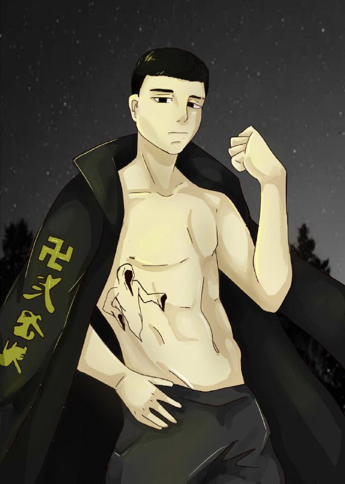
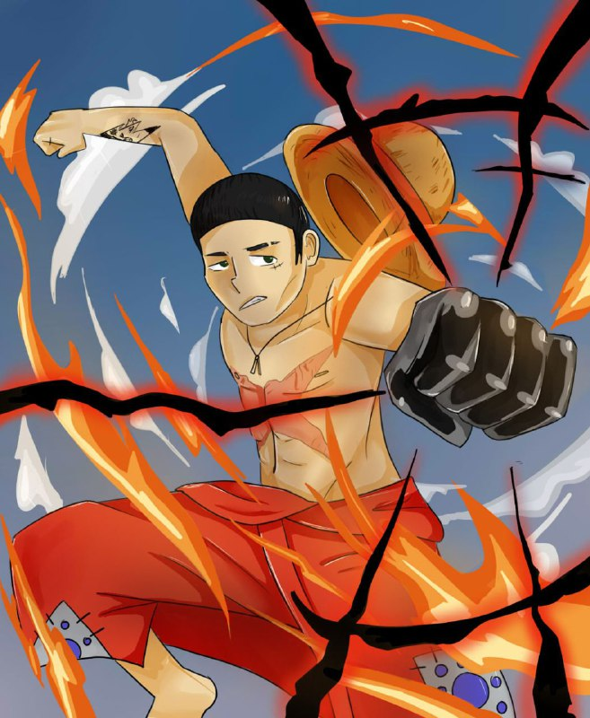

мои увлечения
увлечений у меня не особо много, но я увлекаюсь спортом, также люблю все свое свободное время посвящать просмотру боев и аниме.
Я учусь играть на гитаре и у меня отлично это получается, иногда мы созваниваемся с моими друзьями и я играю им разные песни. Совсем недавно в парке я одожил гитару у случайных девочек и сыграл им пару песенок, им очень понравилось.
Каждый раз я стараюсь найти себе хобби, чтоб занять свое свободное время, но когда у меня нет мотивации я просто сплю сутками или делаю домашние задания.

